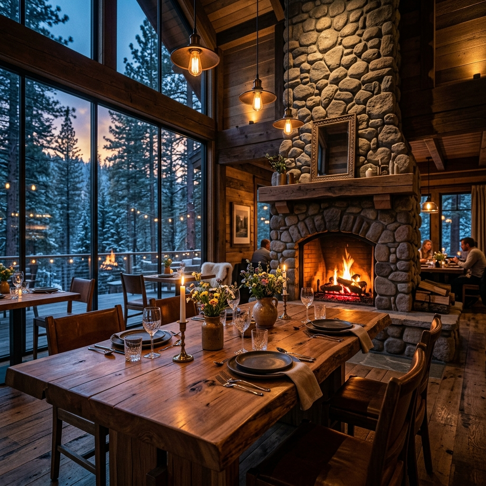

年輪が刻んだ歳月と、
森の命を喰らう。
松山の奥深き森に佇む、完全予約制ジビエ料理専門店。
猟師から直接届く一級の野生鳥獣肉と、
山が育んだ山菜を、薪火の香りと共に。
命の循環に、
敬意を込めて。
当店が提供するのは、単なる「料理」ではなく、森の営みそのものです。信頼する一流の猟師が命がけで仕留めた野生の鳥獣を最高の状態で仕入れ、一切の臭みを残さず、滋味深い極上のジビエへと昇華させます。
店主自らが毎朝山に入り、湧き水で育った山菜や季節のキノコを採取。薪火が爆ぜる音とともに、山林の息吹を五感でご堪能ください。
三つのこだわり
然 -ZEN- が紡ぐ、本物の野生体験
極上の鮮度と熟成
熟練の猟師による迅速な初期処理と、徹底した温度管理による自家熟成。ジビエ特有の獣臭さは一切なく、肉本来のクリアな旨みと柔らかさだけを引き出します。
薪火・炭火グリル
地元の桜や楢の薪を用い、強烈な火力で旨味を閉じ込めつつ、薪の薫りを肉にまとわせます。外は香ばしく、中は驚くほどジューシーに焼き上げます。
松山の山林の恵み
タラの芽、コシアブラ、山椒、季節の野生キノコなど、店主が毎朝松山の山奥で採取する新鮮な山の幸。湧き水が育んだ野の香りは、ジビエの力強い味と完璧に調和します。

一日三組限定の、
プライベートな
森の隠れ家。
森の静寂に溶け込む、木造の美しい一軒家。暖炉の温かな炎が爆ぜる音、薪の薫りに包まれる極上の時間。切り株を贅沢に使用した特等席のカウンターグリルや、原生林を望む半個室など、大人が日常を忘れて心身をリセットできる静寂の空間をご用意しております。
こんな方におすすめ
山林舎 然 -ZEN- で刻む特別な時間
特別な記念日・デートに
都会の喧騒から完全に遮断された、森の奥深くの静寂な空間。暖炉の炎を眺めながら、一生記憶に残る贅沢な時間をお過ごしください。
本物の美食家へのもてなし
信頼の一流猟師から仕入れる極上ジビエと、毎朝採取する新鮮な野草・山菜。ここでしか味わえない野生の真髄が、大切な賓客を感動させます。
心身の深呼吸とご褒美に
薪火の香りと山の美味しい空気、そして大地の生命力をダイレクトに取り入れるジビエ料理。日々のストレスから心を解放し、深く満たされたいときに。
お客様の声
然 -ZEN- を訪れた方々の余韻
「ジビエの概念が覆りました。今まで食べていたのは何だったのかと思うほど、臭みが全くなく、鹿肉のローストは信じられないほど柔らかくて滋味深かったです。暖炉の火を眺めながら過ごした時間は格別でした。」
愛媛県松山市・美食家のお客様 (40代・男性)
「毎朝ご主人が採ってくるという山菜や野草の香りが本当にみずみずしく、猪肉の力強い味わいと見事に合わさっていました。1日3組限定という特別感もあり、本当に贅沢な隠れ家です。」
東京都・ご旅行でお越しのお客様 (30代・女性)
よくある質問
安心してお過ごしいただくために
ジビエ料理特有の「臭みや癖」はありませんか？
当店では、信頼関係を築いた腕利きの専属猟師が適切に即時血抜き・冷却した野生鳥獣のみを仕入れております。さらに当店独自の徹底した温度管理のもとで適切に熟成させているため、癖や嫌な臭みは全くございません。ジビエ肉が初めてのお客様や、過去に臭みで苦手意識を持たれたお客様にも「これなら美味しく食べられる」と大変驚かれております。
子ども連れでの利用は可能ですか？
ディナータイムは静かで贅沢な空間を皆様にお楽しみいただくため、大人のお客様と同じコース料理を召し上がれる「12歳以上」のお客様に制限させていただいております。土日祝のランチタイム（12:00〜15:00）に限り、半個室の貸切にて小さなお子様連れのお客様も歓迎しております。ご予約時にご相談ください。
アレルギーや食べられない肉の種類への対応はありますか？
はい。完全予約制でお席をご用意しておりますので、ご予約の際にアレルギー食材や、召し上がれない肉（猪が苦手、熊は避けたい等）をお申し付けいただければ、別の一品や山菜・野草を中心としたメニューに柔軟に変更させていただきます。ご安心ください。
店舗情報・アクセス
山林舎 然 -ZEN- への道標
- 店名
- 山林舎 然 -ZEN-（さんりんしゃ ぜん）
- 住所
- 〒790-0948 愛媛県松山市浄瑠璃町乙23-5（浄瑠璃寺から車で3分、奥座敷の森の中）
- 電話番号
- 089-XXX-XXXX
- 営業時間
- 完全予約制（1日3組限定）
ランチ：12:00 〜 15:00（土日祝のみ営業 / 最終入店 13:00）
ディナー：18:00 〜 22:00（最終入店 19:30 / コースL.O. 21:00） - 定休日
- 火曜日・水曜日（猟期および山菜採取の状況により臨時休業あり）
- 駐車場
- 専用駐車場 5台完備（店舗正面にございます。大型車も駐車可能です）
- アクセス
- 松山ICより車で約15分。松山市中心部から車で約25分。浄瑠璃町バス停より徒歩約10分。
ご予約・お問い合わせ
「年輪が紡ぐ静寂と、薪火の香り。大地の命をいただく極上の隠れ家へ。」